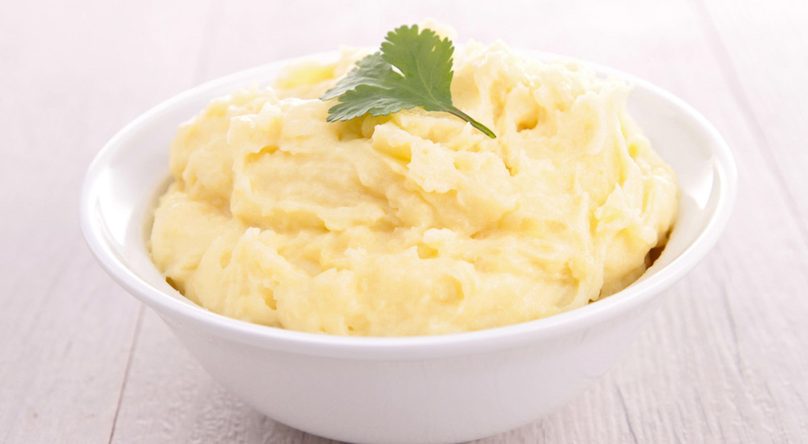

Mashed potatoes

Simple potato dish
Mashed potatoes, thanks to their milk and potato content, provide a good source of protein, minerals and calcium, which promote bone health. The preparation of yellow mashed potatoes is very simple and in Buenazo we will teach you how to make this recipe in just a few steps. Preparing this side dish is especially easy, as it does not require many ingredients or complicated steps.
Ingredients
- 3 white potatoes
- 2 yellow potatoes
- 80 grams of butter
- Fresh milk
- Salt
- White pepper
- Nutmeg
Steps
- Boil the potatoes in enough water with 1 tablespoon of salt. Peel and press them while still hot.
- Transfer the pressed potatoes to a saucepan over medium-low heat. Season with salt, white pepper and nutmeg to taste. Add the butter and gradually pour in fresh milk, stirring, until the desired texture is reached.
- Serve. It can be served with roast and grained white rice.